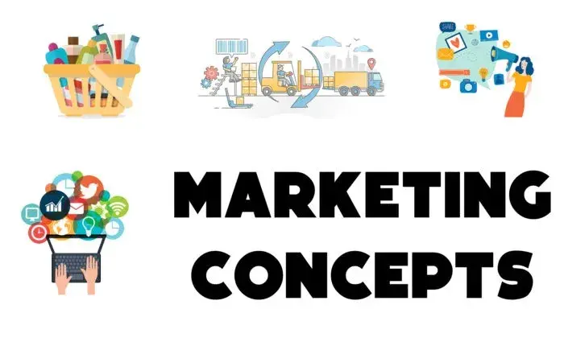
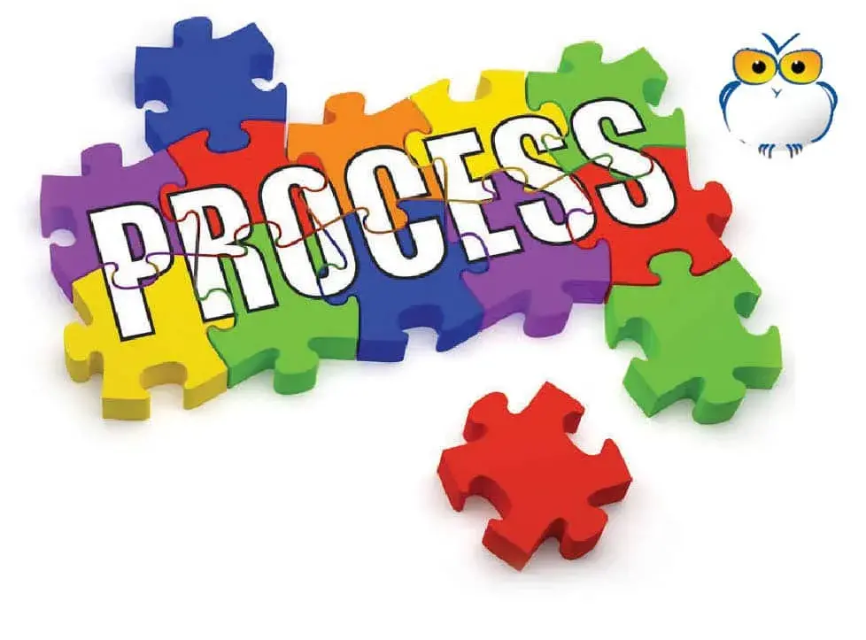
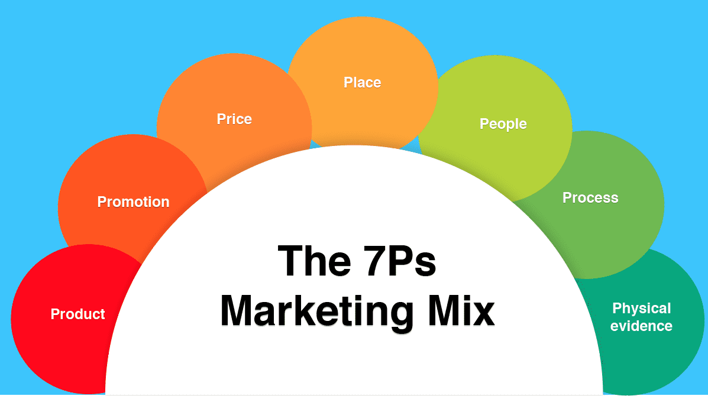
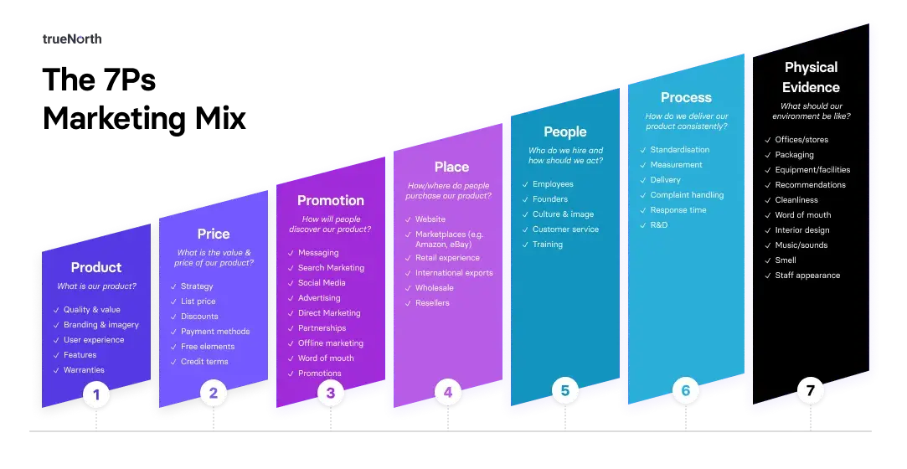

Introduction to Concept Of Marketing
:-

Marketing is the process of creating, communicating, delivering, and exchanging
offerings
that have value for customers, clients, partners, and society at large. It is a
broad discipline
that encompasses a wide range of activities, from product development to market
research
to sales and customer service.
Objective of Marketing :-
The objective of marketing is to create value for customers and achieve
organizational goals
by effectively meeting customer needs and desires. Marketing activities are aimed at
generating awareness, attracting and retaining customers, increasing sales, and
building
strong brand equity. Here are the key objectives of marketing
1. Customer Satisfaction
Marketing aims to understand customers' needs and
preferences and deliver products or services that fulfill those requirements. By
providing
superior value and exceptional customer experiences,
marketing strives to satisfy
customers
and build long-term relationships.
2. Market Share and Growth
Marketing seeks to capture a significant share of the market
by effectively positioning products or services, differentiating them from
competitors, and
developing targeted marketing strategies. By increasing market share and driving
growth,
organizations can achieve a sustainable competitive advantage.
3. Brand Building
Building a strong brand is a fundamental objective of marketing.
Marketing activities focus on creating brand awareness, enhancing brand reputation,
and
establishing a positive brand image in the minds of customers. A strong brand
presence
leads to increased customer loyalty and competitive advantage.
4. Profitability
Marketing plays a crucial role in driving profitability for organizations. By
effectively pricing products or services, identifying target markets, and
implementing
cost-effective promotional strategies, marketing aims to generate sales revenue and
achieve
desired profit margins.
5. Market Expansion:
Marketing objectives often include expanding into new markets or
reaching new customer segments. Through market research, analysis, and strategic
planning, marketing aims to identify untapped opportunities, develop market entry
strategies,
and expand the customer base.
6. Customer Retention and Loyalty
Retaining existing customers is more cost-effective
than acquiring new ones. Marketing focuses on building customer loyalty by providing
excellent customer service, personalized experiences, and loyalty programs. Repeat
business and positive word-of-mouth recommendations are crucial for long-term
success
7. Competitive Advantage
Marketing strategies aim to establish a competitive advantage
by differentiating products or services from competitors. Effective marketing helps
organizations communicate their unique value proposition and gain a favorable
position in
the market, ensuring a sustainable competitive advantage.
Overall, the objective of marketing is to create customer value, drive business
growth, build
strong brands, and maintain a competitive edge in the marketplace. By aligning
marketing
activities with organizational goals, marketing teams contribute to the overall
success and
profitability of the business
( Find your burning business problem's solution here... )
Introduction to 7P’s Of Marketing :-
In the realm of marketing, it is crucial for businesses to develop effective
strategies that drive
success and growth. The 7 P's of marketing provide a framework to analyze and
optimize
various aspects of a company's marketing mix. These P's encompass every element of a
product or service, from its conception to its promotion and beyond. In this blog
post, we will
delve into each of the 7 P's, exploring their significance and how they contribute
to a
successful marketing campaign.
1. Product:
The product is a fundamental component of any marketing strategy, encompassing
more
than just its physical form. It comprises elements such as design, packaging,
quality,
branding, and intangible attributes. A well-designed product that
effectively meets
the needs
and desires of customers can provide a competitive advantage in the market. For
example,
Apple's iPhone stands out not only for its sleek design and advanced features but
also for its
user-friendly interface and seamless integration with other Apple products.
In addition to the physical aspects, factors like warranty, usefulness, and
convenience
contribute to customer satisfaction and loyalty. For instance, Tesla's electric
vehicles offer
not only cutting-edge technology and impressive performance but also longer warranty
periods and convenient charging infrastructure. This combination of features
enhances the
overall customer experience and strengthens brand loyalty.
By focusing on developing products that align with customer preferences, deliver
superior
quality, and provide added value, businesses can differentiate themselves from
competitors
and build a loyal customer base.
( Find your burning business problem's solution here... )
2. Price:
Pricing strategy is a crucial element in determining the success of a product in the
market.
Businesses must consider several factors when setting the right price. First,
production costs
need to be taken into account to ensure that the price covers expenses and allows
for a
reasonable profit margin. Second, the target market plays a significant role in
determining
pricing. Understanding the purchasing power and price sensitivity of the target
audience
helps in setting a competitive and attractive price point.
Competition analysis is another crucial factor in pricing decisions. Assessing the
prices of
similar products in the market enables businesses to position their offering
strategically.
Skimming pricing is often employed for new and innovative products, where a high
initial
price is set to capitalize on early adopters' willingness to pay a premium. Over
time, the price
is gradually lowered to attract a broader customer base.
Psychological factors also influence customers' purchasing decisions. Perception of
value,
brand image, and affordability all play a role in how customers perceive a product's
price.
Effective pricing strategies take into account these psychological costs to create
perceived
value and align pricing with customers' expectations.
By considering production costs, target market dynamics, competition, and
psychological
factors, businesses can set prices that maximize profitability, maintain
competitiveness, and
resonate with customers' perceived value.
( Find your burning business problem's solution here... )
3. Promotion:
Promotion is a vital component of marketing that aims to create awareness and
generate
interest in a product or service. It encompasses various strategies and tactics to
effectively
reach and engage the target audience. Advertising, which involves paid media
placements,
is a common form of promotion. It can be done through television, radio, print,
online
platforms, and social media channels.
Public relations (PR) activities, such as press releases, media relations, and
events, help
build a positive brand image and generate favorable publicity. Sales promotions,
including
discounts, coupons, contests, and loyalty programs, incentivize customers to
make a
purchase and encourage repeat business.
Personal selling involves direct communication between a salesperson and potential
customers to address their specific needs and showcase the product's benefits. This
form of
promotion is particularly effective for complex or high-value products.
To maximize return on investment (ROI), businesses can collaborate with
influencers,
industry partners, or complementary businesses. Leveraging their existing
audience
and
credibility can amplify the reach and impact of promotional efforts.
Effective promotion strategies increase brand awareness, build familiarity, and
ultimately
drive sales by capturing the attention and interest of the target audience. By
utilizing a mix of
advertising, PR, sales promotions, and personal selling, businesses can
create
comprehensive and impactful promotion campaigns.
4. Place:
The "place" element in marketing refers to the distribution channels used to bring a
product
or service to customers. It involves selecting the most appropriate channels that
provide
convenient access for the target audience. This can include direct sales, retail
stores,
e-commerce platforms, wholesalers, or a combination of these.
The importance of place in marketing lies in ensuring that the product is available
to
customers when and where they need it. Convenience and accessibility are key factors
that
influence purchasing decisions. By strategically choosing distribution channels,
businesses
can reach their target market effectively and provide a seamless buying experience.
The location of distribution points plays a crucial role in meeting customer
expectations.
Retail stores and e-commerce platforms need to be conveniently located or easily
accessible
online. Additionally, understanding customer preferences, such as their
preferred
shopping
channels or delivery options, helps in tailoring the distribution strategy to align
with their
needs.
Effective place strategies also consider factors like inventory
management,
transportation
logistics, and supply chain efficiency. Seamless distribution processes result in
timely
product availability, reduced costs, and improved customer satisfaction.
By carefully considering the "place" element, businesses can ensure that their
products or
services are accessible to customers in the right locations and through the most
suitable
channels, ultimately enhancing customer experience and maximizing sales
opportunities
( Find your burning business problem's solution here... )
5. People:
People play a crucial role in the marketing mix, both within the organization and as
customers. The employees who directly interact with customers have a significant
impact on
their overall experience and perception of the brand. It is essential for businesses
to invest in
training and development to ensure that their staff is knowledgeable, courteous, and
capable
of delivering excellent customer service. Well-trained employees can effectively
communicate the brand's values, address customer inquiries, and provide
personalized
assistance, thereby enhancing customer satisfaction and loyalty
Understanding customers' needs, preferences, and behavior is also vital for
effective
marketing. By conducting market research and analyzing customer data, businesses can
gain valuable insights into their target audience. This information allows for the
development
of targeted marketing strategies, tailored product offerings, and personalized
messaging that
resonates with customers. It enables businesses to meet customers' expectations,
anticipate
their needs, and create positive experiences, fostering long-term relationships.
The importance of people in marketing cannot be overstated. They are the driving
force
behind delivering exceptional customer experiences and building strong connections
with the
target audience. By focusing on employee training and understanding customer
behavior,
businesses can optimize their marketing efforts and achieve sustainable success.
6. Process:

Process refers to the series of procedures, systems, and workflows that enable the
smooth
delivery of a product or service. It plays a crucial role in marketing as it
ensures
consistency,
efficiency, and customer satisfaction throughout the customer journey.
A well-defined process is essential for several reasons. First, it enables businesses
to
maintain consistency in delivering their products or services. Consistency builds
trust and
reliability, which are crucial for establishing strong customer relationships.
Second, an
efficient process minimizes errors, delays, and resource wastage, leading to cost
savings
and improved productivity. This efficiency positively impacts the overall customer
experience.
From order processing to after-sales support, each step in the process should be
carefully
designed to provide a seamless experience for customers. Effective processes
streamline
interactions, reduce friction points, and enhance customer satisfaction. This, in
turn, leads to
increased customer loyalty, positive word-of-mouth, and repeat business.
In marketing, the process is vital for delivering on the promises made through
branding and
promotional activities. It ensures that customers receive the value they expect from
the
product or service, which contributes to long-term success and positive brand
reputation. By
focusing on optimizing processes, businesses can differentiate themselves in the
market and
gain a competitive advantage.
( Find your burning business problem's solution here... )
7. Physical Evidence:
Physical evidence plays a significant role in shaping customers' perceptions of a
product or
service. It encompasses the tangible elements that customers interact with and
experience.
The physical environment, such as a retail store or office space, sets the stage
for
the
customer's interaction and can create a lasting impression. For example, a
well-designed
and aesthetically pleasing store layout can enhance the overall shopping experience.
Packaging is another crucial aspect of physical evidence. It not only protects the
product but
also communicates the brand's image and quality. High-quality packaging can
convey a
sense of premiumness and attention to detail. For instance, luxury brands often
invest in
luxurious and visually appealing packaging to create an upscale brand perception.
Branding materials, including brochures, business cards, and promotional merchandise,
also
contribute to the physical evidence. These materials reflect the brand's identity
and values,
leaving a tangible reminder for customers.
Signage, both inside and outside a physical location, helps customers navigate and
locate
products or services. Clear and well-designed signage enhances convenience and
customer
experience.
Other sensory cues, such as music, lighting, and scent, can create a specific
ambiance and
atmosphere that aligns with the brand image. For instance, a spa may use calming
music,
dim lighting, and subtle scents to create a relaxing environment.
Overall, physical evidence in the form of the physical environment, packaging,
branding
materials, signage, and sensory cues can significantly impact customers'
perceptions,
influencing their purchasing decisions and fostering brand loyalty
The 7 P's of Marketing in 2023 :-

The 7 P's of marketing are still relevant in 2023, but they are evolving to meet the
needs of
the digital age. For example, the rise of social media has made it possible for
businesses to
reach a wider audience with their promotional messages. Additionally, the
growth of
e-commerce has changed the way that products are distributed.
As the marketing landscape continues to evolve, businesses need to be agile and
adaptable.
They need to be able to quickly adapt their marketing strategies to take advantage
of new
opportunities and trends.
How to Use the 7 P's of Marketing :-

The 7 P's of marketing can be used to develop and implement effective
marketing
strategies.
The following steps can help businesses get started :-
1. Analyze the target market. The first step is to understand the target market. What
are
the needs and wants of the target market? What are the customer's pain points?
2. Define the product. The next step is to define the product. What are the features
and
benefits of the product? How does the product solve the customer's pain points?
3. Set the price. The price is the amount of money that customers pay for the
product.
The price should be set based on the cost of production, the competition, and the
perceived value of the product.
4. Develop a promotion strategy. The promotion strategy is the communication that a
business uses to inform potential customers about its products. The promotion
strategy should be designed to reach the target market and generate interest in the
product.
5. Choose the distribution channels. The distribution channels are the ways that a
product is made available to customers. The distribution channels should be chosen
based on the target market and the product's features.
6. Train the people. The people who interact with customers play a critical role in
shaping customer perceptions of the brand and the customer experience.
Businesses need to train their employees to provide excellent customer service.
7. Design the process. The process refers to the steps that customers go through to
purchase and use a product. The process should be designed to be efficient and
easy to use.
8. Create physical evidence. The physical evidence refers to the tangible elements
that
customers see, touch, and experience when they interact with a product or service.
The physical evidence should be consistent with the brand and the product's
features.
Understanding and implementing the 7 P's of marketing is essential for businesses
aiming to
achieve their marketing objectives. By carefully analyzing and optimizing each
element -
product, price, promotion, place, people, process, and physical evidence - companies
can
create a comprehensive marketing strategy that resonates with their target audience,
builds
brand equity, and drives long-term success. Remember, the 7 P's provide a holistic
approach
to marketing, ensuring all aspects work together to deliver a cohesive and impactful
message to consumers.
Frequently Asked Questions
1. What is the importance of the 7 P's of marketing?
The 7 P's provide a comprehensive framework for analyzing and optimizing
various aspects
of a company's marketing mix. They help businesses understand and address
customer
needs, differentiate themselves from competitors, build strong brands, and
achieve
marketing objectives.
2. How do the 7 P's contribute to a successful marketing campaign?
Each of the 7 P's plays a crucial role in a marketing campaign. The product
needs to meet
customer needs and stand out from competitors. Pricing strategies must
consider costs,
competition, and customer perception. Promotion helps create awareness and
generate
interest. Place ensures convenient access to the product. People influence
customer
experiences and build relationships. Process ensures efficiency and
consistency. Physical
evidence shapes customer perceptions
4. How do the 7 P's align with digital marketing in 2023?
The 7 P's have evolved to adapt to the digital age. For example, social media
has opened up
new promotional channels, and e-commerce has changed distribution methods.
The
principles of understanding the target market, defining the product, setting
the price,
developing a promotion strategy, choosing distribution channels, training
people, designing
the process, and creating physical evidence still apply but may be executed
differently in a
digital context.
5. How can businesses use the 7 P's to differentiate themselves?
By analyzing and optimizing each element of the marketing mix, businesses can
differentiate
themselves from competitors. They can create a unique product, set a pricing
strategy that
offers value, develop innovative promotions, select convenient distribution
channels, invest
in employee training, design efficient processes, and create compelling
physical evidence.
6. Are the 7 P's applicable to small businesses?
Yes, the 7 P's are applicable to businesses of all sizes. Small businesses
can benefit from
understanding their target market, defining their product or service,
setting competitive
prices, promoting effectively, choosing appropriate distribution channels,
training their staff,
designing efficient processes, and creating appealing physical evidence.
7. How can businesses ensure they are effectively implementing the 7 P's?
Effective implementation of the 7 P's requires thorough analysis, strategic
planning, and
continuous evaluation. Businesses should conduct market research, align
their marketing
activities with customer needs, regularly review and adjust their
strategies, and gather
feedback from customers to ensure their marketing efforts are effective and
in line with the
objectives.